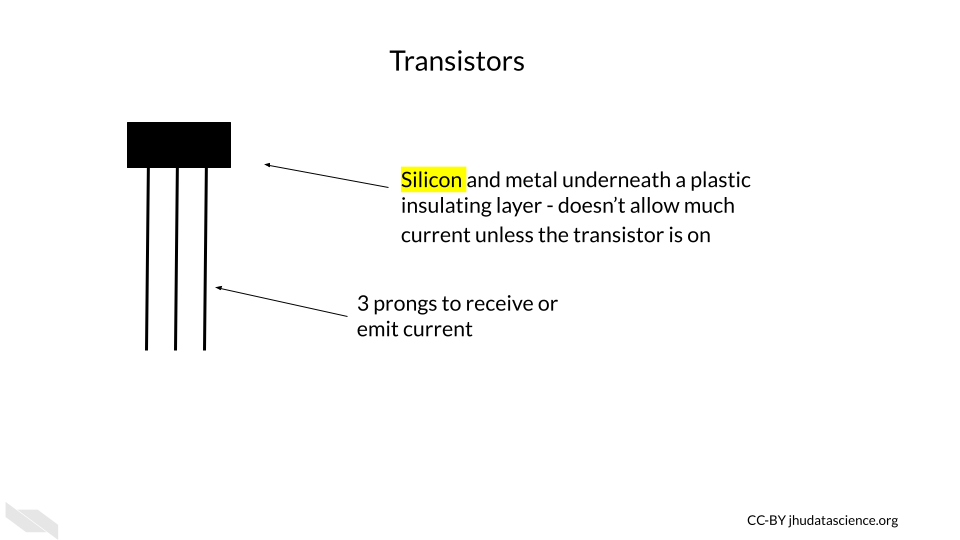
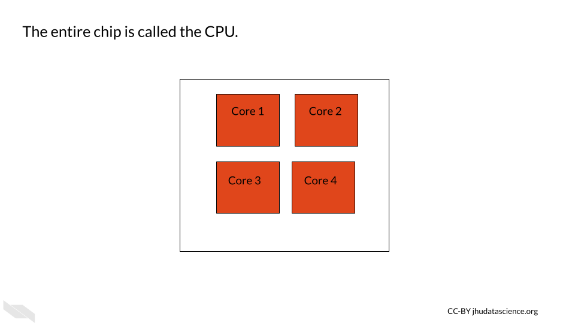

Chapter 2 Computing basics
First we would like to start off with some background information about how computers actually work. Note that this is one of the longer chapters of the course, as we feel that this knowledge will be very helpful for understanding what computing resources your research will actually require and will better enable you to discuss your computing needs with computing experts.
If you are already more familiar with these topics, we hope that this chapter might fill in possible knowledge gaps, point you to more resources, or at least provide some entertaining information regarding the history and future of computers that might change your perspective.


2.1 Computing Components
Luckily, you are likely not going to need to become a bee keeper to perform your computational research (unless of course that interests you)! Instead, computers rely on millions to billions of transistors.
2.1.1 Transistors
Transistors are one of if not the most important basic building blocks of computers. There are many different types of transistors, but they often look like a rectangle with three prongs.

Transistors behave like electronic switches or gates that either allow or do not allow current to flow through a particular part of a circuit.
")
[Source]
Inside the plastic, is often silicon, or some other semiconductive crystal. Semiconductors are needed because they can conduct electricity (especially when combined with a layer of conductive metal) but are neutral on their own, making them the perfect option for creating an electrical switch. Silicon is especially useful, because it doesn’t cause the circuit to get very hot, unlike previously used materials. It is also very abundant, in fact, it is the second most common element of the Earth’s crust! (“Silicon - Wikipedia” n.d.)).

If the transistor receives a small amount of current to one of the prongs (called the base), this turns it on, and allows the larger current for the circuit to pass through the transistor (from a prong called the collector to the prong called the emitter).

If the base prong of the transistor does not receive a small current than the transistor is off and the current for the circuit is not allowed to flow through the transistor.

These two states for the flow of current ultimately allow for the storage and use of binary data, which we think of a zeros and ones, but it is really the absence or presence of current with a voltage beyond a threshold for this part of the circuit.

Thus the physical components of a computer are ultimately based on the assessment of only two states of current (0 (or FALSE) = below a threshold and 1 (or TRUE) = above a threshold), which is much easier to create than if it we needed to assess more nuanced levels of current. It turns out that this binary encoding of current as digital data is the basis for all the complex tasks that we use computers for everyday.
Very importantly transistors have gotten much smaller over time.

The smaller size of transistors has allowed for many more transistors to be used inside computers.

[Source]
{kind=link}
Both the smaller size of the transistors and the increased number of transistors have in part allowed computers to become faster and more powerful (Pokropivny et al. 2007).
These silicon transistors became so important for the field of electronics, that the time period of heavy computing development during the late 20th century and early 21st century is sometimes called the “Silicon Age”. This is also why many places in the world where there are many technological institutes are often called a name with the word “silicon”, such as Silicon Valley. Here is an interesting article about what our next age might be about, and it has to do with changing the way we harness electrons (the current role of transistors) - that’s how important they are!
If you would like to learn more about the history of transistors and how they work check out this website.
2.1.2 ALU - Arithmetic Logic Unit
The ALU is responsible for performing simple operations by using networks (in this case commonly called a circuit) of transistors.
These simple operations include logical operations (such as AND, OR, or NOT etc.), and arithmetic operations (such as addition, subtraction, or multiplication etc.).
Ultimately most of what we do everyday on our computers come down to these simple operations.
These operations are based on what is called Boolean logic or Boolean algebra, which was invented by George Boole in 1854 and largely comes down to thinking of possible sets of data (“How Do Logic Gates Work?” n.d.). For example, if we have two transistors, they could both be on, they could both be off, or one or the other could be on. Considering these possibilities, we can make overall descriptions about the flow of current to perform logical operations.
Let’s take a moment to understand how networks of transistors work for AND and OR operations. We call a network for a logical operation a logic gate.
The transistor AND gate has two transistors in series, meaning they are sequentially placed one after the other, where one receives current first before the other. A resulting high current output only occurs when both of the transistors allow for the flow of current. If either or both of the transistors is off than the current is not allowed to flow through.
, then the gate does not allow the current to flow through this part of the circuit. If both transistors are on then the current can flow through this part of the circuit.")
The transistor OR gate has two transistors in parallel, meaning they are next to one another each receiving the flow of current at the same time. A resulting high current output can occur when either of the transistors allows for the flow of current.
, then the gate allows the current to flow through this part of the circuit.")
Importantly using more complex arrangements of these logic gates can allow the computer to perform the arithmetic operations. See here and here for more information on how this works.
Finally, it is important to note that modern transistors
If you would like to learn more about these gates with circuit diagrams, check out this [website] (http://hyperphysics.phy-astr.gsu.edu/hbase/Electronic/trangate.html#c1) and this website for some visualizations. This website and this website also go into great detail.
In case you are wondering about the semantics of phrases like the “flow of current”, check this discussion.
2.1.3 Binary data
An ALU performs arithmetic operations using values are represented in binary digits called bits (0 or 1) (recall that this is based on a state of current). Data like this is also called Boolean, because George Boole invented a system of algebra for such data in 1854 . These values do not mean their typical meanings from what we know numerically, but instead follow arithmetic rules using 2 as the base, as opposed to 10 which we are familiar with for our decimal system. What does this mean? With our decimal system when we reach a value of 10, we start to carry over the 1. With the binary system when we reach a value of 2, we start to carry over the 1.

Here we can see how the first 9 digits of the decimal system are represented in the binary system.

See here to learn more about binary calculations.
2.1.4 Flip-flops and registers
Flip-flops are used for storing one bit of digital binary data. They are made of transistors (that’s right it’s transistors again!) and capacitors in a configuration that allows for the flip-flop to hold one of two states, thus enabling the storage of binary data.
A group of flip-flops is called a register. You may have heard about a computer having a 64- or 32- bit operating system (more on what this soon). These computers have registers with 64 bits or 32 bits respectively. Thus there are 64 flip-flops within the registers of a 64-bit system. Each of these are capable of storing and processing binary values 64 digits in length (which works out to an unsigned integer in our decimal system of up to 2^64-1, or 18,446,744,073,709,551,615)!
You may also be wondering how letters and other symbols are stored in this binary system.
Letters are each assigned a numeric decimal value according to an encoding system such as the ASCII system, and these are converted into the binary form of the number. In the ASCII system, this ultimately works out to letters being stored by a standard 8 binary digits (or bits). A group of 8 bits (8 digits of zeros and or ones) is called a byte (“What Is ASCII (American Standard Code for Information Interexchange)?” n.d.). Since this is consistent, this works well with computers that have registers that can store in sets of 8 bits. In fact, that is indeed how most computers work today. The “64-bit” part of what is called a 64-bit computer indicates what is called the word size or word length, which is the maximum unit of data that the computer can work with at a time. This means that it can process binary numbers of up to 64 digits in length. Since 64 divided by 8 is 8, this means for a 64-bit computer, each register could store up to 64 bits or binary digits and thus can store 8 binary bytes. Since each letters or symbol is encode by a byte (8 bits), this means up to 8 letters or symbols can be stored by a single register at a time. Other computers may work with a 32-bit word size, meaning that the registers can accommodate only 4 bytes at a time or 32 binary digits.
Below you can see the decimal value for some of the symbols and letters:

Note that ASCII has largely been replaced in 1991 for Unicode, which allows for more characters, supporting languages like Chinese that require for more characters than the 256 that ASCII could support, however this works in a similar way.
Here’s a video that puts everything we have explained so far together:
If you want to watch another optional video that explains things further and describes how transistors are used to add numbers together check out this link.
2.1.5 CPU - Central Processing Unit
The CPU is often called the brain of the computer. It is also called a core or processor. This is what people are referring to when they describe a “computer chip”. It performs and orchestrates computational tasks.
The CPU is made up of several components, a few that are particularly important (two of which we have discussed):
1) ALU
2) Registers
3) Control Unit (CU)
A group of these components together is called a core.
The Control Unit coordinates the ALU and the data stored in the registers, so that the ALU can perform the operations on the right data stored in the registers at the right time.
Modern computers now have multiple cores. What does this mean?
This means that there are multiple groups of the above components that can each process data within the same computer chip. A dual core CPU is a chip with two cores. A quad-core CPU is a chip with 4 cores and so on.This allows modern computers to perform multiple tasks at the same time instead of sequentially, such as 4 tasks simultaneously on a current typical laptop (with 4 cores). This makes our computers much faster than they used to be.
In addition to the main CPU, computers may be equipped with specialized processors called GPUs which stands for graphics processing units that are especially efficient at tasks involving images. Thus any tasks that require the involvement of images are done using the GPU and not the CPU. This frees up the CPU to continue on the tasks not involving images more efficiently.
 Hyper-threading is also an option for improving processing. This technology started in 2002 by Intel. The idea is that while part of the same core is idle or waiting for a given task, another part of the same core can work to perform another task. This isn’t as efficient as a having another core or CPU, but it does improve efficiency. So many modern computer chips actually use all three efficiency boosters (having multiple cores, having GPUs, and using hyper-threading). Thus a chip with 4 cores that also has hyper-threading can work on 8 tasks simultaneously. Since it is now much easier to produce chips with multiple cores and because there are some security concerns with hyper-threading, the field seems to be moving away from hyper-threading.

2.1.6 Memory or RAM - short-term memory
OK, so we have already talked about how data can be stored in the registers within the CPU. This data or memory is used directly by the CPU during operations or tasks. However, our CPUs need additional quick access to data to tell the CPU what to do to perform the operations and what data to use. This is the data in a file that we are working with at a particular moment in time. This bring us to RAM, which stands for Random Access Memory. It is often simply referred to as memory. Ram is similarly made out of transistors and capacitors like the registers within the CPU, but it is located nearby but outside of the CPU. Since CPUs need to be fast, RAM needs to be fast, making it relatively expensive. One distinctive feature of this type of memory is that it is temporary. Data is stored in RAM for only a short time, while your computer is running a task on it, but then it disappears. Due to the fact that what is stored disappears, this type of memory is also called volatile. This is why when you are working on a file, but forget to save it, you might lose your work.
For more information about how RAM works, check out this website.
2.1.7 Storage - long-term memory
We can also store data that we aren’t directly using when our computer is performing operations. So for example, our excel files and word files that aren’t currently in use. This type of memory is called storage and is sometimes referred to as long-term or non-volatile memory because electricity is not required to preserve this data. This type of memory is stored using hard disk drives (HDDs) also called hard drives or more recently solid-state drives (SSDs). The reason accessing this memory is slower than accessing data stored in RAM is that it is located further away from the CPU and data needs to be transferred from the storage to the CPU along a wire when a user wants to perform operations on such data. In addition the right data needs to be found out of all of your files, which also takes some time. This type of storage allows for much larger data capacity than RAM and it is also cheaper.
Hard disk drives store memory using magnetic methods, while solid-state drives store memory using chips that have guess what??
They are made of yet again the important basic building block of computers - tiny bees! Oops, I mean transistors yet again, just like the CPU chip! See, those transistors are really important.
SSDs allow for much faster reading and writing of files, as well as increased reliability. However, they are more expensive and they also wear out eventually.
Here’s a great explanation for how HDDs work and the difference with SSDs. It will also introduce the concept of caching, which allows for faster use of data from storage for the CPU:
See this link for more information about how SSDs work, and see here for an in depth explanation.
2.1.8 Hardware and software
So far we have talked about the hardware of a computer, which is the physical components of a computer, while software is the code that tells the hardware how to function.
Software is also important to know about. Most importantly it is useful to know about operating systems.
2.1.9 Operating systems
The operating system (sometimes simply called the OS) is a set of code or software that translates user interactions with the computer to tell the hardware (including memory and the CPU) of the computer what tasks the user wants the computer to perform and when.
You can think of this as the basic code to keep the computer running and functional and to allow the user to use other forms of software, such as applications. Applications are specialized software programs like Microsoft Word, or an internet browser like Chrome that allow a user to do specific tasks on the computer. So your OS is what allows you to name, rename, move and save files. It helps you to keep track of memory and decides what memory should be used when and to run all of your application software. It also allows you to talk to other devices like printers or other computers.
Examples of commonly used operating systems on computers and phones are:
* Microsoft Windows (such as Windows 10, Windows 11 etc.)
* macOS (notice the OS here - it might make more sense now why it is called this)
* Linux
* Android
Recall that we previously talked about how computers today are often called 64-bit? Operating systems are also designed in this way. A 64-bit operating system expects the hardware of the computer to allow for processing at least 64 bits of data at a time (the word size). If we have registers of at least this length in the CPU, than we can in fact perform operations on data that may be up to 64 bits in length. This also means that we can perform operations on values that take up less than 64 bits. This can be important because if you try to use an operating system that expects a longer word size than the hardware can accommodate, for example a 64-bit operating system on a 32-bit computer, this will not work. Application programs are also designed according to different word sizes and again you need to choose options that are equal to or less than the word size that your CPU can accommodate.
2.1.10 Historical context
Previously, back when a university might have one single computer, as they were so large and expensive (they didn’t use those nifty small transistors of today), computers didn’t have operating systems and only one task could be performed at a time by one person at a time. Back then, tasks were just manually started, prioritized, and scheduled by humans. Tasks or programs (including sometimes data) could be printed or punched on cards (called punchcards, punch cards or punched cards) that would be loaded into the machine. It could really be a pain for users if they accidentally dropped the cards for the program they wanted to run, as you can imagine!

The first operating system just allowed different programs to be run sequentially without someone manually starting each one. Now our personal computers can perform multiple tasks at the same time and schedule future tasks that our automatically run.
See here for more information about operating systems and here for really interesting information about the history of punched cards. Check out this really interesting Wikipedia article for more extensive history about how computer hardware was developed.
Also, here is some fascinating additional reading on the role of women as computer operators starting in the 1940s. Initially computer science was actually thought of as a field for women, however this changed over time:
2.2 Conclusion
We hope that this chapter has given you some more knowledge about how computers actually function.
In conclusion, here are some of the major take-home messages:
- Computers rely on millions to billions of tiny transistors
- transistors act like electrical switches that allow for the storage and processing of digital binary data
- binary data is essentially the encoding of current states in the hardware of a computer as zeros and ones
- As transistors got smaller and more transistors were included in computers, computers got faster and more powerful (also due to other additional reasons)
- The central processing unit or CPU contains the Arithmetic Logic Unit or ALU which performs operations on data using transistor logic gates
- A CPU chip can contain multiple cores (also called CPUs) allowing a computer to perform multiple operational tasks at a time
- RAM is the memory for a computer for the tasks that its currently working on and is very fast to access because it is close to the CPU
- Storage on a hard drive or solid state drive is the memory for a computer that is long-term, such as files that you aren’t currently working on. It takes longer to access data from this memory as it has to travel to the CPU
- The operating system is what tells the computer what the user wants the computer to do and when
Now that we know how a computer works in general, we will next discuss computing capacity (especially for informatics research) and how servers and cloud computing can help.
avocado - add more about modern computer transistors, add an image about RAM and CPU etc